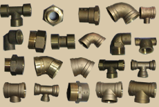
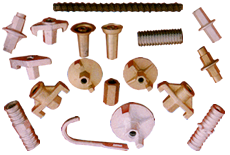
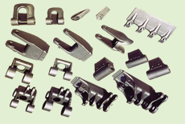

Welcome to WWW.DAWEIVALVE.COM
Dalian Dawei International Co., Ltd is a China's company that has become one of leading suppliers of various industrial valves, fittings, flanges, pipe, relative piping accessories, various castings and forgings.
Established in early 90s as a special manufacturer and supplier of industrial products, we have developed more than 9000 items of products serving chemical and petrochemical, power generation oil and gas, pulp and paper, food processing, mining and ship building, civil construction, etc.


